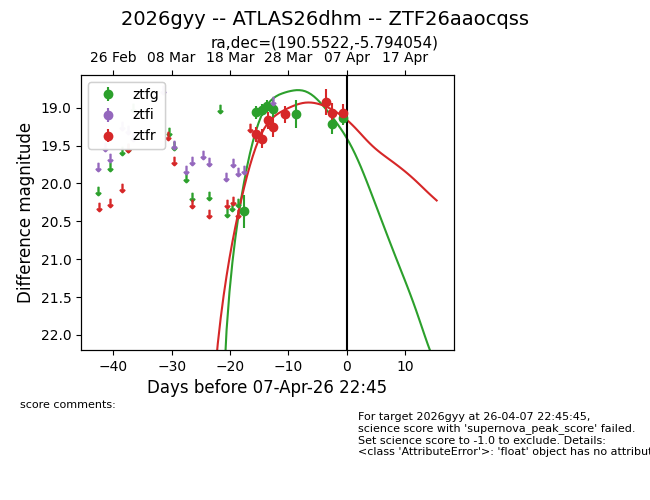
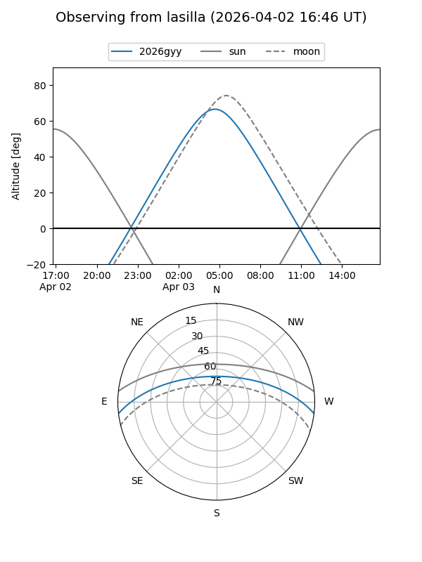
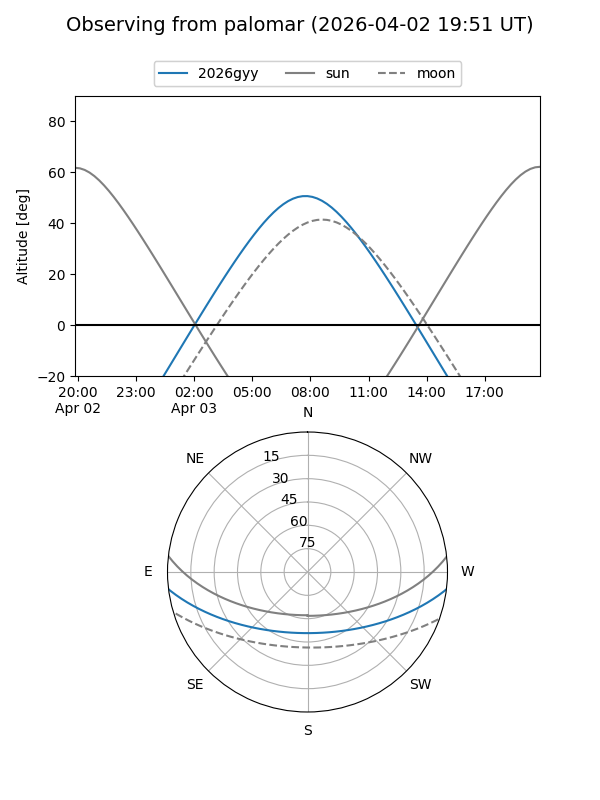
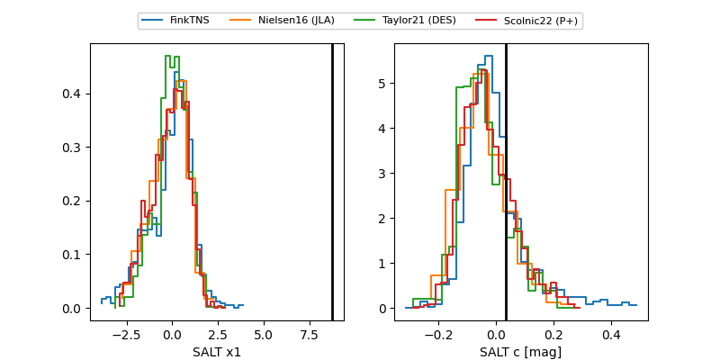

2026gyy
Target 2026gyy at 2026-04-07 22:52
Aliases and brokers:
FINK: link
Lasair: link
ALeRCE: link
TNS: link
YSE: link
alt names
ZTF26aaocqss (ztf,fink_ztf)
2026gyy (tns,yse)
ATLAS26dhm (atlas)
Coordinates:
equatorial (ra, dec) = 190.5522,-5.79405
equatorial (HMS+DMS) = 12:42:12.53,-05:47:38.59
galactic (l, b) = (298.7143,+57.00210)
Flags:
Photometry:
last ztfg=19.13, ztfr=19.06
8 ztfg, 8 ztfr detections
Lightcurve

Visibility


Additional plots
